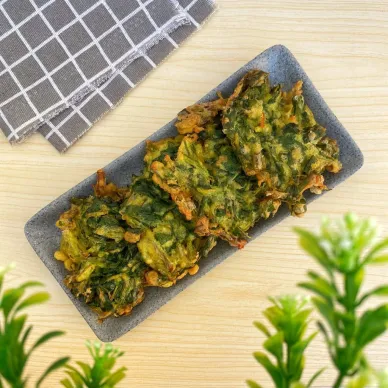

Bingung mau sarapan apa! Kita bikin bihun goreng aja yuk!
Bahan-bahan :
* 70 gr bihun
* 1 butir telur ayam
* 4 buah cabe merah keriting (haluskan)
* 6 siung bawang merah
* 1 siung bawang putih
* ½ batang daun bawang
* 2 helai seledri
* ½ sdt garam
* ½ sdt penyedap
* 1 sdm saus samba
* 1 sdm kecap
* 5 gr teri
Cara Membuat
- Iris bawang merah dan bawang putih, lalu tumis sampai harum.
- Masukkan telur, lalu oseng-oseng.
- Masukkan cabe yang telah dihaluskan, masak sampai harum.
- Masukkan bihun, tambahkan saus sambal, kecap, daun bawang dan seledri.
- Tambah teri yang telah di goreng sebelumnya.
- Tambahkan garam dan penyedap, aduk-aduk dan koreksi rasa.
- Bihun goreng siap untuk dihidangkan.
2. Bakwan Kangkung

Bahan-bahan :
* 150 gr kangkung, potong-potong
* 150 gr tepung terigu
* 1/4 sdt garam
* 1/2 sdt kaldu bubuk
* 1/2 sdt lada bubuk
* Secukupnya air
* 200 ml minyak goreng
* 2 siung bawang putih
* 1 siung bawang merah
* 1 ruas kunyit
* 1 sdt ketumbar
Cara Membuat
- Siapkan cobek, lalu ulek semua bumbu hingga halus.
- Siapkan baskom, lalu tambahkan tepung terigu, bumbu halus, garam, kaldu bubuk, lada bubuk dan air. Aduk hingga rata.
- Tambahkan kangkung, lalu aduk hingga rata.
- Panaskan minyak, lalu goreng hingga berwarna kecoklatan.
- Jika sudah berwarna kecoklatan, angkat dan sajikan selagi hangat.